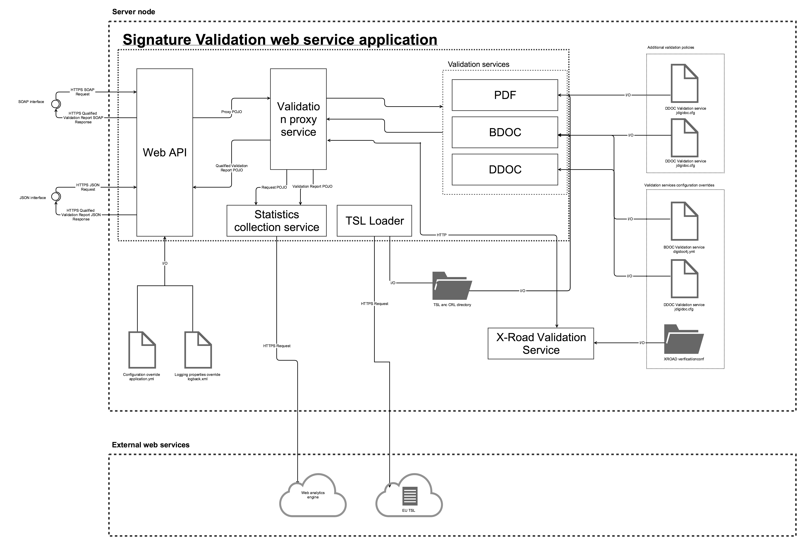
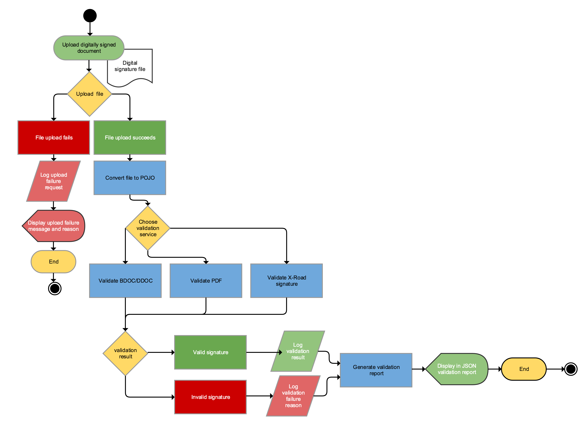
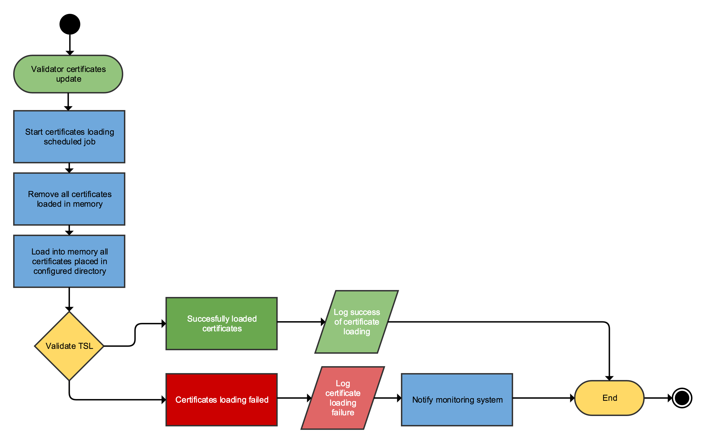
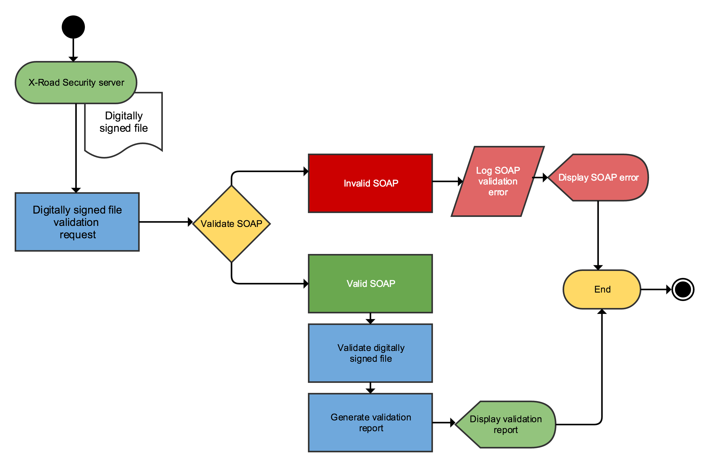
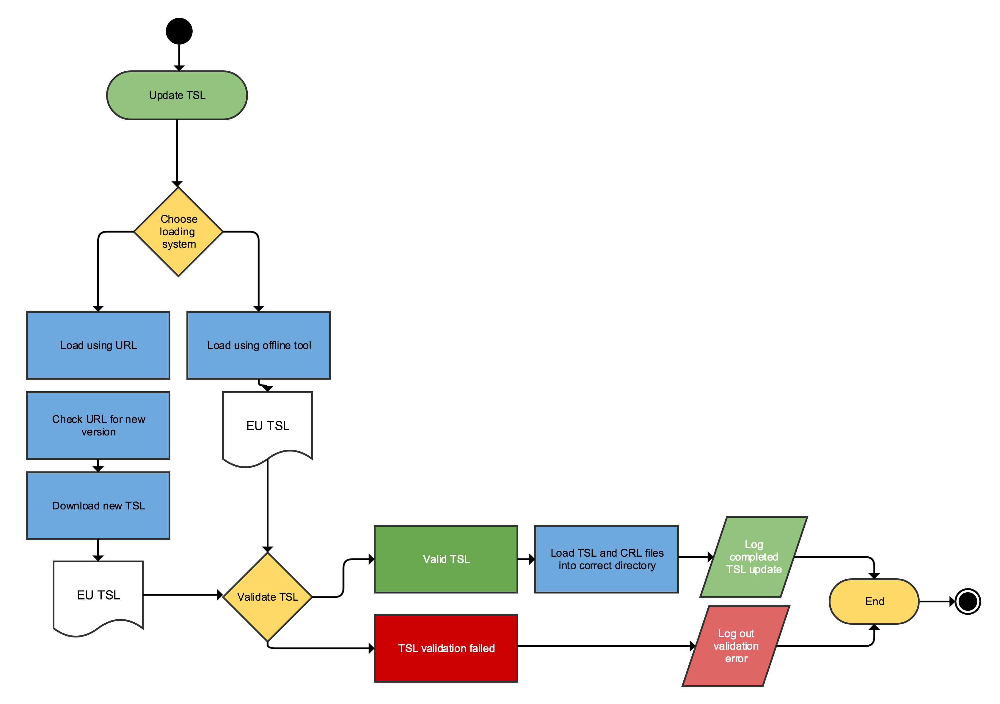

Structure and activities
Component diagram

Web API
Web API is standard Spring Boot Web application module inside SiVa webapp it will take in JSON or SOAP requests sent by systems that are integrated with SiVa web service API. The incoming requests will be converted to SiVa Proxy Module Java request objects. Web API module also does basic validation of incoming requests. Checking that all the required fields are present and document type is correct.
When validation has been completed by proxy selected validation service the returned qualified validation report Java object will be marshalled based on incoming request to JSON or SOAP and returned to client that requested the validation.
External configuration resources
- Optionally SiVa webapp can load in configuration file (i.e application.yml) at application startup time. Configuration file can control Spring Boot configuration options in addition to SiVa application specific options.
- Optionally SiVa webapp can also load in logging configuration options
Validation proxy service
Validation proxy service or validation service selector is Spring Boot module that will take the Web API sent
request object and try to find matching validation service based on the documentTypeinside the request object.
When matching validation service have been found the proxy request is converted to validation request and sent to matched
validation service.
When no matching validation service has not been found exception is raised and error object is returned to Web API module. On successful validation the qualified validation report Java object sent from validation service is returned to Web API module.
Note
Validation services can be added dynamically to SiVa by conforming to pattern documentType + "ValidationService" and new
validation service module must be Maven dependency of siva-validation-proxy. Example
would be BDOCValidationService.
Validation reporting service
Validation reporting service is optional module that can be turned on or off using configuration file. It's Spring Boot module and main purpose is to collect data about: incoming request, validation reports and errors that have been reported during validation process.
When HTTP authentication header have been set the reporting service will also collect its and adds to required statistics reports.
After the report object have been created the data will be sent to configured reporting service. SiVa is preconfigured to work with Google Analytics.
TSL Loader
TSL loader loads in contents of TSL file from given URL in online mode or from directory when using offline mode in predefined interval.
Validation services
All validation services use different Java library to validate given document in request. The used validation library is described in each of the validation service section.
Common process that all validation services do with proxy forwarded validation process is:
- Convert the Base64 encoded document into
InputStreambyte array - Check that given document is correct format (i.e valid BDOC). If not then error is thrown and validation process is terminated.
- After validation of signatures has been completed the validation service starts to build qualified validation report
- Validation report is created even validation
FAILEDor ended withINDETERMINATEresult
PDF Validation service
PDF or PaDES as known in DSS validation service uses Digidoc4J DSS fork Java library PaDES validation functionality using the validation policy that complies with Estonian laws and regulations.
Configurable functionality:
- Possibility to add additional validation policies using SiVa
application.ymlconfiguration section.
BDOC validation service
BDOC for ASiC compliant containers both TM and TS will latest Maven released DigiDoc4J library
DDOC Validation service
DDOC for previous generation digitally signed files will use latest Maven release of JDigiDoc
X-Road validation service
X-Road containers are similar to ASiCE containers but are not valid ASiCE containers. There we could not use DSS nor DigiDoc4J provided
ASiCE validation functionality but need to X-Road developed asicverifier Java command line utility to validate these containers.
Source code for asicverifier can be found in GitHub xroad-public repository*[]:
Asicverfier has been integrated into SiVa as Java library. Making possible to use all the Java libraries packaged into asicverifier fat JAR.
Configurable functionality:
- In SiVa configuration
application.ymlfile You can define alternative location forglobalconfdirectory to be loaded in using input stream
Use cases
Digitally signed document validation process
Digitally signed document validation process shows how SiVa chooses validation service and possible output of validation process.

User of SiVa system provides digitally signed document file in form of Base64 encoded string. The validation of file and validation policy is handled by validation services underlying libraries.
- In case of PDF file it will be DSS
- For BDOC and DDOC files we will use DigiDoc4J or when required jDigiDoc
- And for X-Road signatures we will use X-road signature validation utility
We will log following failure cases: When file upload fails (request started but was not completed successfully) When request validation (JSON or SOAP) fails When user authentication fails - not shown in diagram above When signature validation fails – not shown in diagram above When increasing of request count fails – not shown in diagram above
Certificate loading process
All validation services require certificates to validate digitally signed documents. Below process shows how certificates are loaded into validation service. Loading process is done separably for each validation service.

Certificate loading process is scheduled cron job inside each validation service to update currently in memory loaded certificates.
This process should run after TSL loader has completed updating SiVa local copy of certificates.
X-Road 6 security server SOAP request process
X-Road validation process is brought out because we skip authentication process for X-Road security server interface and and use XML SOAP as input source.

Validation of SOAP request XML is done in the SiVa web application module. Document validation process is described in detail in Digitally signed document validation process Validation report output id described in Interface description
TSL loading use case
TSL implementd in seprate module. The process is executed in two ways.
- When SiVa application is started
- As scheduled job
Loading process is required action when ASiCE (BDOC) or
